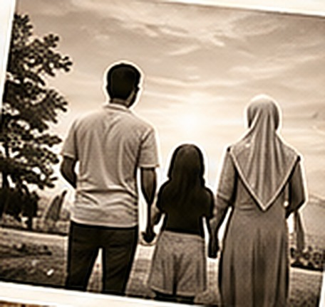
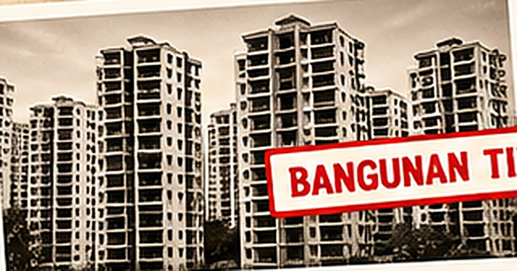
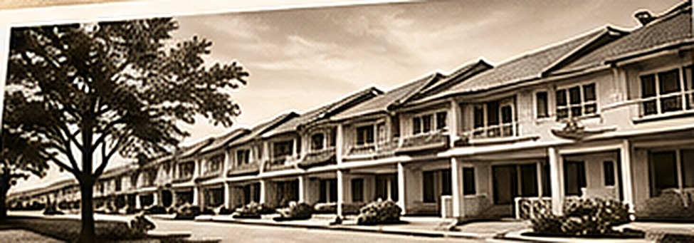
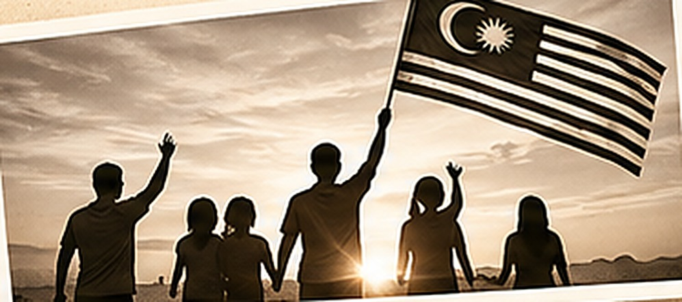

Kemerdekaan yang sebenar juga membawa makna apabila rakyat dapat menikmati kehidupan yang lebih sejahtera.
Negara Yang Kita Mahu
Aman& Selamat.

PELUANG EKONOMI
PENDIDIKAN BERKUALITI
KEMUDAHAN AWAM
PERKHIDMATAN RAKYAT
Kita mahukan sebuah negara yang aman dan selamat. Sebuah negara yang menyediakan peluang ekonomi, pendidikan berkualiti, kemudahan awam yang baik dan perkhidmatan yang memberi manfaat kepada rakyat.
Bukan Sekadar
Tetapi
Kesejahteraan rakyatnya.

BANGUNAN TINGGI

Kemajuan negara bukan sekadar diukur melalui bangunan yang tinggi atau pembangunan yang pesat, tetapi juga melalui kesejahteraan hidup rakyatnya.
Inilah Aspirasi
Malaysia MADANI
Kesejahteraan Dinikmati

Inilah aspirasi Malaysia MADANI. Memastikan kemajuan dan pembangunan dapat dinikmati bersama, tanpa mengira latar belakang, demi membina kehidupan yang lebih baik untuk generasi yang akan datang.